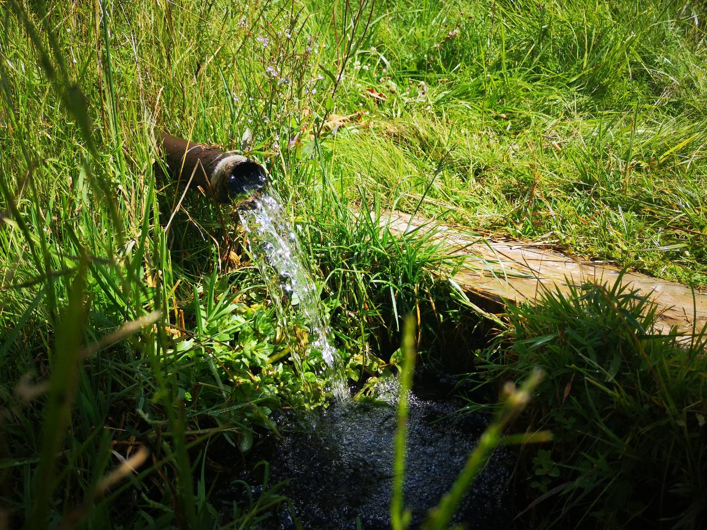

У вёсцы Бялянішкі стаіць вялізны дуб. Па сведчанні мясцовых жыхароў яго ўзрост – 500 год! Дуб з'яўляецца помнікам прыроды. Па словах мясцовых жыхароў, яго кара і галінкі прыносяць чалавеку поспех. Магутнае дрэва ахутана легендамі і гісторыямі, звязанымі са шматлікімі гістарычнымі асобамі.
Па легендзе, якая перадавалася з пакалення ў пакаленне, дуб пасадзілі мясцовыя жыхары яшчэ ў 1510 годзе, калі на гэтыя землі прыйшла Асманская Імперыя. Каля дуба была зямлянка, дзе яны хаваліся ад ворагаў. Але ёсць і другая версія паходжання дуба. Па ёй дуб пасадзілі крымскія татары ў гэтым жа стагоддзі.


У 1812 годзе, падчас Айчыннай вайны, каля дуба праходзіла войска Напалеона. Цяпер вы можаце зрабіць эфектныя фотаздымкі ля яго падножжа, прысеўшы на вялізны корань і адчуўшы сябе палкаводцам! У час паўстання Т. Касцюшкі ў 1794 годзе каля дуба спыніўся князь, дыпламат, кампазітар М. К. Агінскі. Ён, удзельнік паўстання, ішоў са сваім атрадам на цяперашні Даўгаўпілс. Мясцовыя сяляне рэкамендавалі ўзяць яму кару і галінкі дуба, бо яны прынясуць яму поспех. Аднак Агінскі толькі пасмяяўся з іх забабонаў. Пасля чаго ён пацярпеў поўнае паражэнне, нягледзячы на тое, што яго войска пераўзыходзіла войска суперніка. Па легендзе, ён вярнуўся да дуба папрасіць прабачэнне і паднесці дары. З'яжджаючы, ён узяў сабе галінкі і кару дуба, пасля чаго ўсё жыццё яго суправоджваў поспех: ён пазбег рэпрэсій пасля паразы паўстання, быў памілаваны рускім царом, а яго музыка стала вядомая па ўсім свеце.

На шляху да дуба вы можаце наведаць крыніцу з мінеральнай вадой. Яна знаходзіцца каля старой ваданапорнай вежы з вялізным бусліным гняздом.“Вада ў крыніцы мае пастаянную тэмпературу 7,5*C. Нават пры самым лютым марозе крыніца не замярзае, і тэмпература застаецца такой жа,”- кажа краязнаўца Алесь Гарбуль. Тут вы можаце адпачыць і папіць вады.
Калі вам патрэбна дапамога магутнага дуба, вам абавязкова трэба наведаць гэтае месца! Поспеху ва ўсім!Запісалі Адоцік Паліна, Юркевіч Аліса